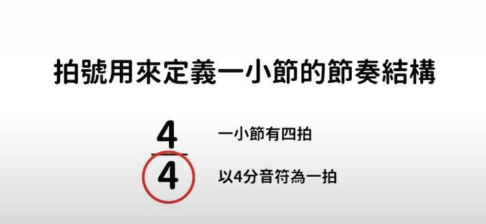
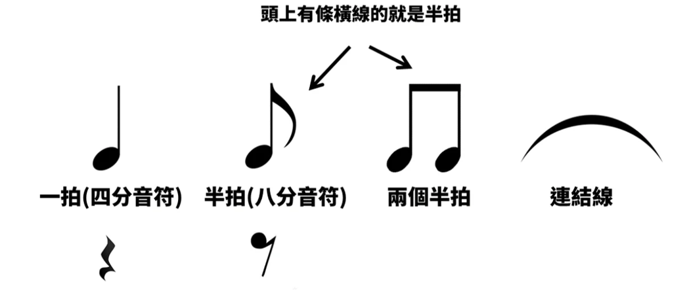
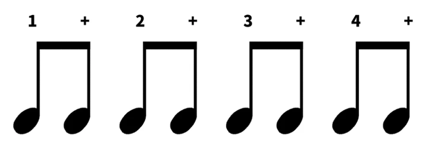
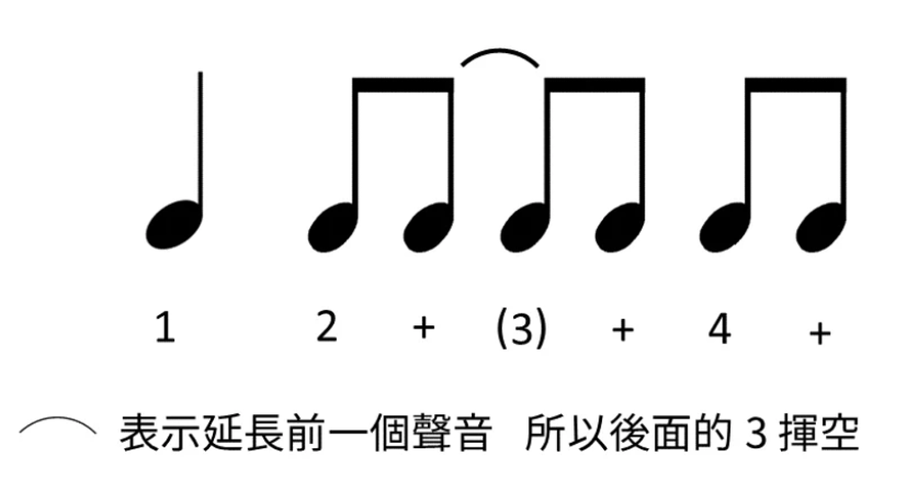
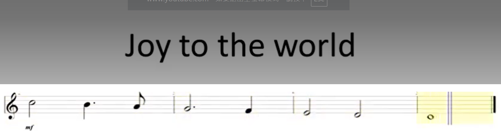
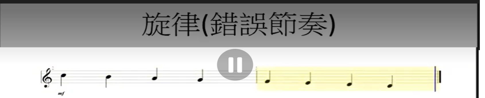
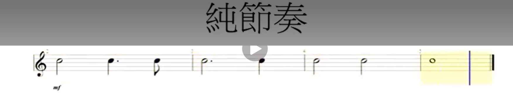
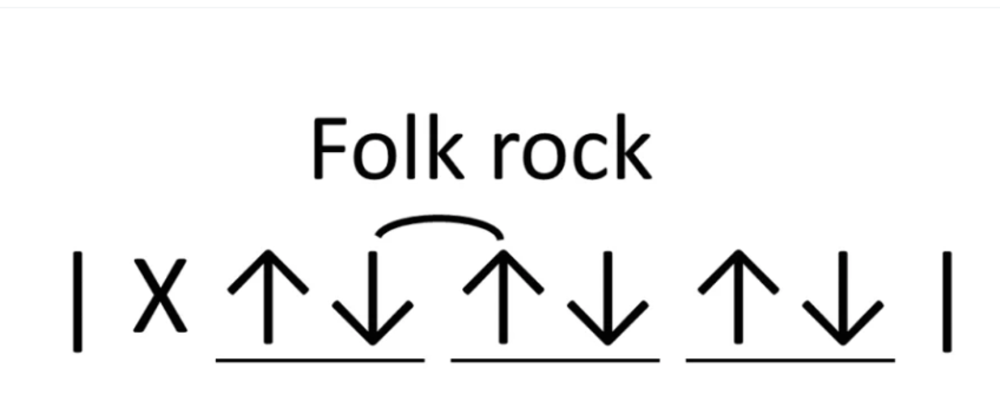

解析音樂的時間軸、拍子結構與節奏視譜
教學核心：基本音符長度與休止符、拍號含義 (Time Signature)、常見節奏型態
實作重點：視譜卡點練習、4/4 拍節拍器應用、常見流行樂刷奏型態解析
音符代表聲音持續的時間長度，音符之間的倍數關係如下：

拍號代表每小節的拍數與計拍單位音符：

流行樂中最基礎且廣為使用的 4/4 拍節奏構造：

結合正拍與反拍的實作打擊與視譜邏輯：

真實樂譜中的節奏變化與連續切分音：


包含休止符與附點音符的複雜節奏採譜：

台灣常用經典刷奏與律動練習：
